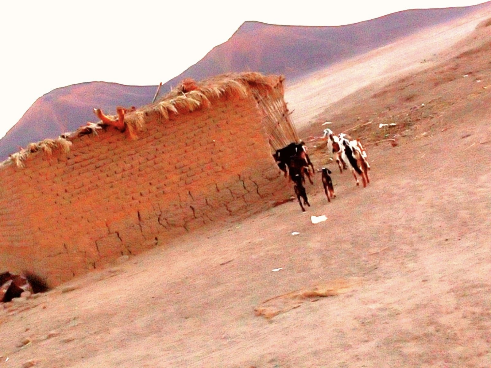
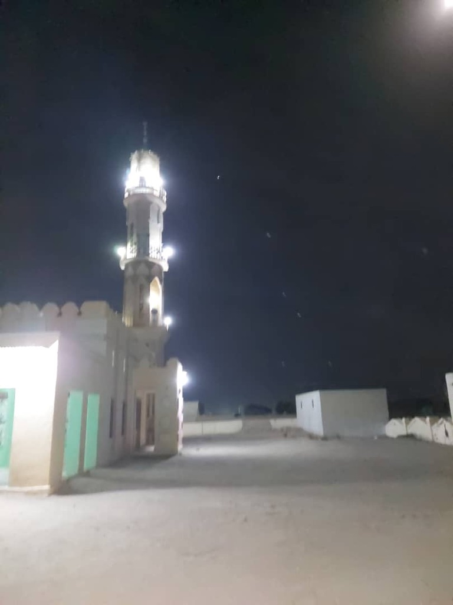

Recent Developments and Technology in The Village
- 
The life before 2016
- Before 2016 the village of Farriag was completely dark at the night accept few houses, because of the lack of
electricity in the village. Even the houses that were lit up at night, their residents were using
special machines that work by oil to generate electricity. Although there were not electric on
the village, the people there were happy and feeling that there were no other things they needed to
have.
- 
The life after 2016
- Then in 2016 the residents of the village of Farraig helped the government by donating
some money to the government, so the government can bring the electricity to the village and
that was the beginning of the development of the village. The stores begin to open, and
people bought a refrigerator so they can save their food. Also, people who live in the village of
Farriag began to watch TV and learn new things about the world around them. Many machines
entered the village after the electric, such as the washing machines, Iron and many things that
made the live of the people there much easier. Also, electricity helped agriculture and
doubled production, which contributed to increasing income. That is why the entrance of the
electricity changed a lot in the village of Farriag.